class: center, middle # EE-464 STATIC POWER CONVERSION-II # DC/DC Converters Continued ## Ozan Keysan ## [keysan.me](http://keysan.me) ### Office: C-113 <span class="meta">•</span> Tel: 210 7586 --- -- ## [Slobodan Ćuk](https://en.wikipedia.org/wiki/Slobodan_%C4%86uk) ### [Linked-in profile](https://www.linkedin.com/in/slobodancuk/) --- # Ćuk converter 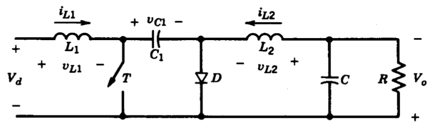 -- ### Supplies a negative voltage -- ### Reduced EMI and bi-directional power flow -- ### C1 is the primary energy storage element (should be large) --- # Ćuk converter ## Can you plot the on & off states? --- ## ON State 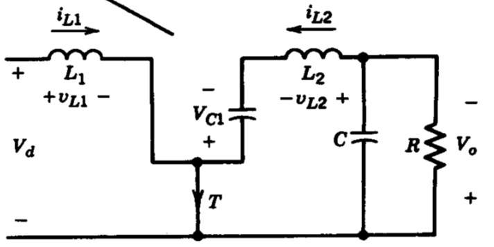 -- ### Diode off (reverse biased by C1) -- ### \\(i\_{L1}\\) and \\(i\_{L2}\\) passes through T1 -- ### C1 discharges through T1 (\\(V\_{C1}>V\_{o}\\)) --- ## OFF State 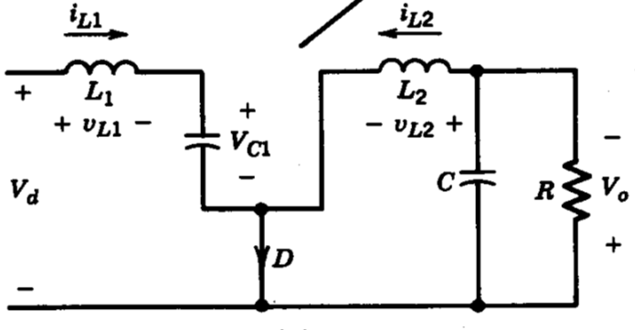 -- ### Diode on -- ### \\(i\_{L1}\\) decreases (\\(V\_{C1}>V\_{d}\\)) -- ### C1 charges through D1 (from input and L1) --- ## Operating States 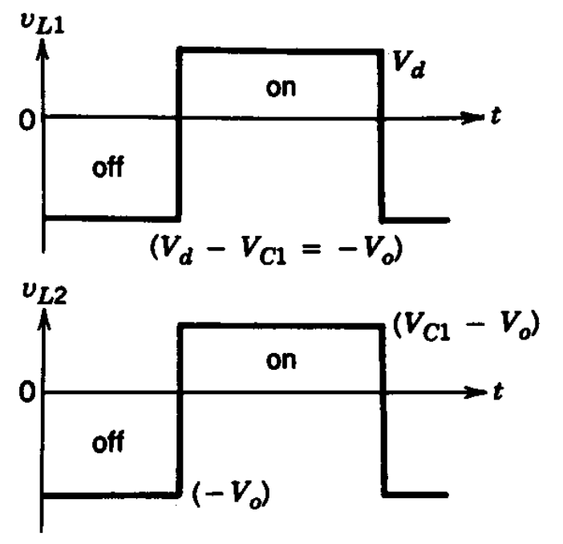 --- ## Operating States <img src="./images/ee464/cuk_inductor_current.png" alt="Drawing" style="width: 450px;"/> --- # Ćuk converter #\\(V_o = \dfrac{D}{(1-D)} V_d\\) ## It is a buck-boost converter! --- # [Input/Output Ripple](https://www.eetimes.com/document.asp?doc_id=1273276&page_number=1)? 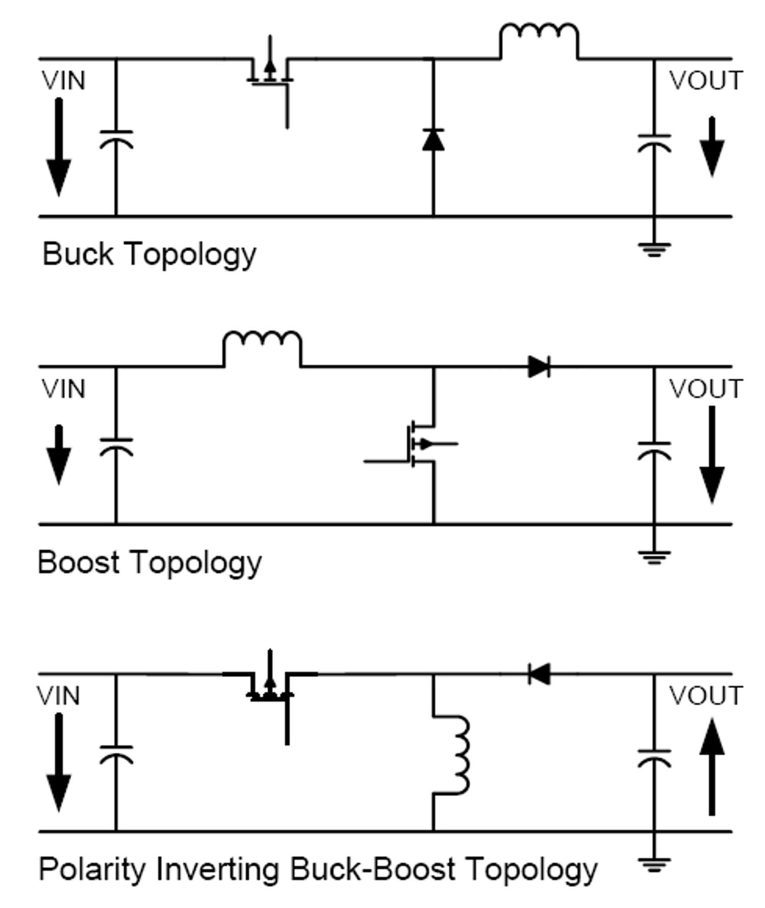 --- # Ćuk converter ## Double ended: Inductors placed at both the input and the output --- # Ćuk converter ## Advantages: - ## Both input and output currents are ripple free (fed through inductors) -- - ## Lower filtering requirements -- - ## Constant source current --- # Ćuk converter ## Disadvantages: -- - ## Capacitor(C1) is quite bulky -- - ## Capacitor (C1) should have a large ripple current rating -- - ## Complex circuit #### For curious students: [Power Electronics Manifesto](https://www.youtube.com/watch?v=DDDy-i2fYg0) by Slobodan Ćuk --- # Practical Product: [LM2611](http://www.ti.com/product/LM2611) <img src="http://www.ti.com/ds_dgm/images/alt_snos965j.gif" alt="Drawing" style="width: 700px;"/> --- # Practical Product: [LM2611](http://www.ti.com/product/LM2611) <img src="https://media.digikey.com/Photos/Texas%20Instr%20Photos/LM2611EVAL.JPG" alt="Drawing" style="width: 600px;"/> --- # Example ## Mohan Exercise 7-3 -- 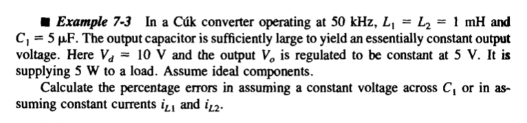 --- # SEPIC Converter -- ## Single Ended Primary Inductor Converter -- <img src="http://www.ridleyengineering.com/images/SPM/02/article2_01.jpg" alt="Drawing" style="width: 800px;"/> -- ### Essentially a boost converter cascaded with a buck-boost converter --- # SEPIC Converter <img src="http://www.ridleyengineering.com/images/SPM/02/article2_01.jpg" alt="Drawing" style="width: 600px;"/> ### Popular in battery powered systems (voltage level can be adjusted according to charge level) -- ### Possible to shutdown completely (when the switch is off) --- ## [Operating Modes](http://www.all-electronics.de/wp-content/uploads/migrated/document/114418/502ag0207.pdf): 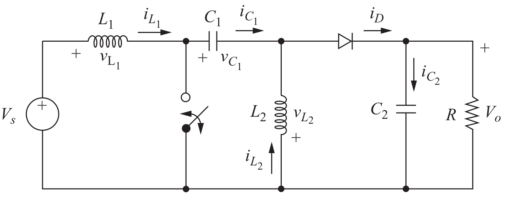 --- ## [Operating Modes](http://www.all-electronics.de/wp-content/uploads/migrated/document/114418/502ag0207.pdf): ON State 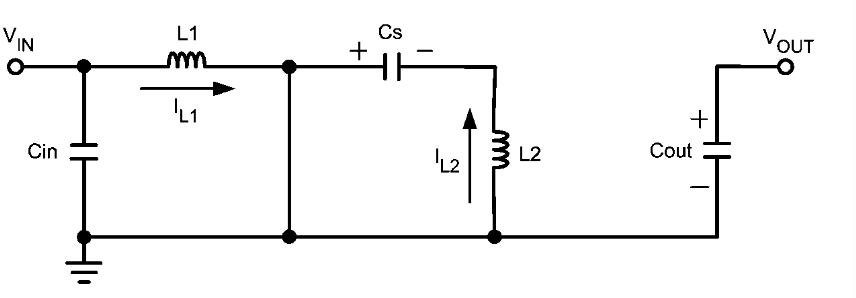 ## \\(v\_{L1}=Vs\\) --- ## [Operating Modes](http://www.all-electronics.de/wp-content/uploads/migrated/document/114418/502ag0207.pdf): OFF State 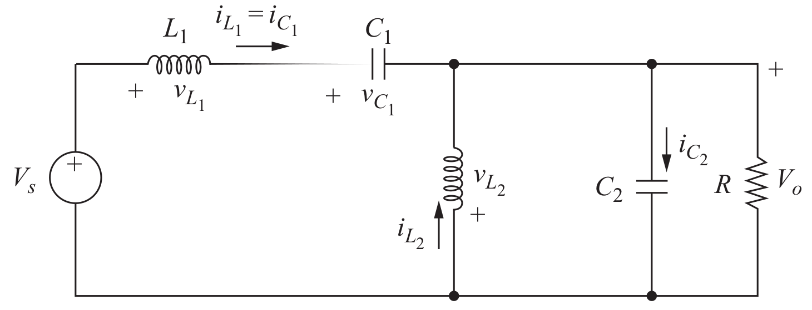 ## \\(-V\_s + v\_{L1} + v\_{C1} + V\_{o}=0\\) -- ## If \\( v\_{C1} =V\_{s} \\) then \\(v\_{L1} = -V\_{o}\\) --- ## [Operating Modes](http://www.all-electronics.de/wp-content/uploads/migrated/document/114418/502ag0207.pdf): Currents 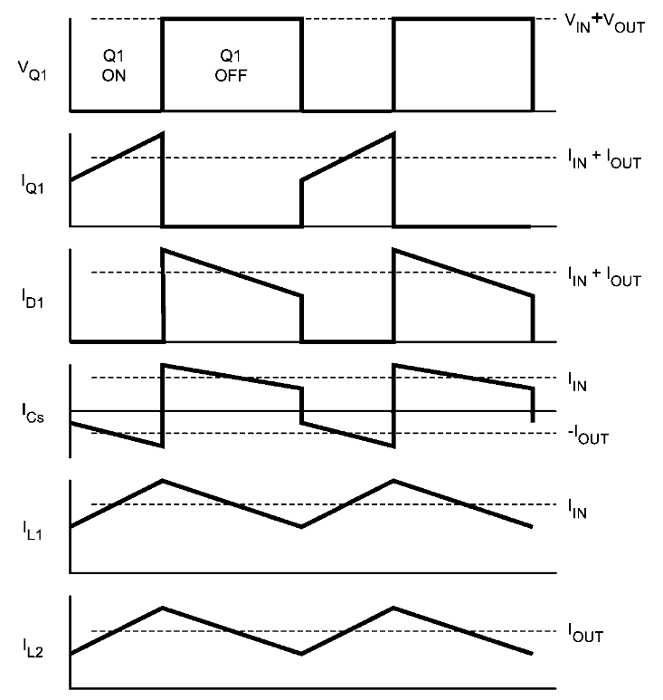 --- # Example (Handout) --- # SEPIC With Mutually Coupled Inductors 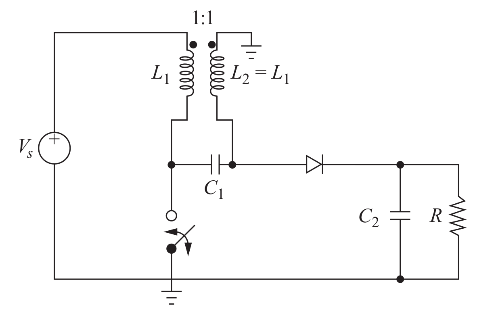 --- # SEPIC Converter -- ## Advantages: - ### Non-inverting buck-boost converter -- - ### Energy Efficient (can be completely turned-off) --- ## Disadvantages: - ### Pulsating output current -- - ### Large capacitance (and large ripple current rating) -- - ### Fourth order transfer function, difficult to control - ### Energy Efficient (can be completely turned-off) --- # SEPIC Converter -- ## Inductors can be combined is a single core (coupled inductors) ## Lower required inductance, and size ## Minimize oscillation in the circuit (more on that later) --- # Interleaved Converters -- ## Interleaved Buck Converter -- 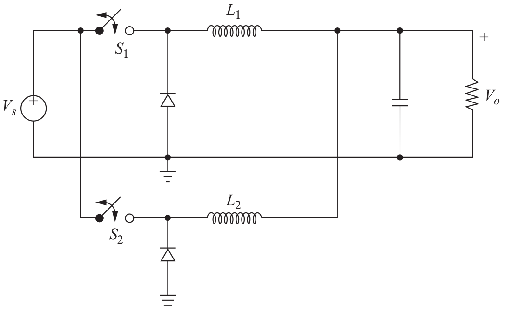 --- # Interleaved Converters ## Interleaved Buck Converter 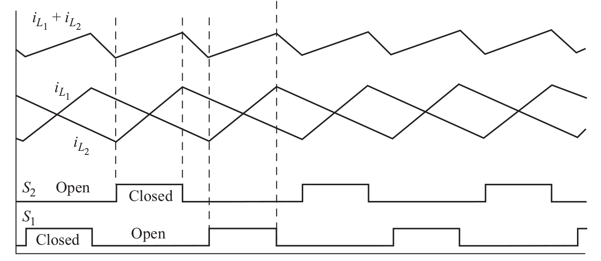 --- # Interleaved Converters ## Interleaved Boost Converter 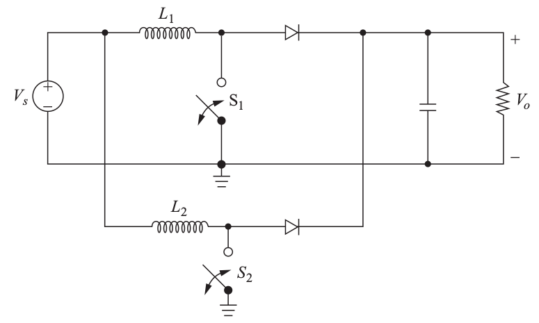 --- # Reading Assignments - ### [TI Training Videos](https://training.ti.com/world-power) - ### [MATLAB Topology Comparison](https://www.mathworks.com/matlabcentral/fileexchange/60167-dc-to-dc--buck-boost-buck-boost-sepic-cuk--converters?s_tid=gn_loc_drop) - ### [Application Note: Designing A SEPIC Converter](http://www.all-electronics.de/wp-content/uploads/migrated/document/114418/502ag0207.pdf) - ### [Sepic and Ćuk Converters](http://www.idc-online.com/technical_references/pdfs/electrical_engineering/C_uK_and_Sepic_Converter.pdf) - ### [Sepic Converter Basics](https://www.youtube.com/watch?v=m5OG_3-sbCs) - ### [Power supply topology: SEPIC vs Flyback](https://www.electronicsweekly.com/news/products/analog/power-supply-topology-sepic-vs-flyback-2005-11/) --- ## You can download this presentation from: [keysan.me/ee464](http://keysan.me/ee464)